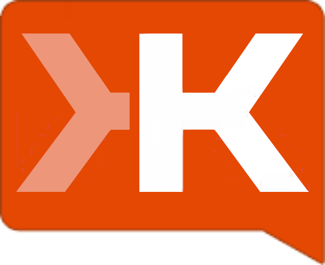

<!doctype html>
<html lang="en">

<head>
<meta charset="utf-8">

<title>Intro to Scala</title>

<meta name="apple-mobile-web-app-capable" content="yes" />
<meta name="apple-mobile-web-app-status-bar-style" content="black-translucent" />
<meta name="viewport" content="width=device-width, initial-scale=1.0, maximum-scale=1.0, user-scalable=no">

<link rel="stylesheet" href="css/reveal.min.css">
<link rel="stylesheet" href="css/theme/typesafe-training.css" id="theme">
<link rel="stylesheet" href="lib/css/idea.css">

<style>
#logotable {
  margin: auto;
}
#logotable td {
  text-align: center;
  vertical-align: middle;
}
</style>

<!-- If the query includes 'print-pdf', include the PDF print sheet -->
<script>
  if( window.location.search.match( /print-pdf/gi ) ) {
    var link = document.createElement( 'link' );
    link.rel = 'stylesheet';
    link.type = 'text/css';
    link.href = 'css/print/pdf.css';
    document.getElementsByTagName( 'head' )[0].appendChild( link );
  }
</script>

<!--[if lt IE 9]>
<script src="lib/js/html5shiv.js"></script>
<![endif]-->
</head>

<body>

<div class="reveal">
<div class="slides">


<!-- ########################################################################################### -->
<!-- BEGIN
<!-- ########################################################################################### -->

<section data-markdown data-background="#53cdec" data-state="h2Uppercase"><script type="text/template">
## Intro to Scala

#### Scala SB, 5/22/2014

#### Kip Sigman (Typesafe), Joe Zulli (Stealth-mode Startup)
</script></section>

<!-- ########################################################################################### -->
<!-- Overview
<!-- ########################################################################################### -->
<section>

<section id="overview" data-markdown data-background="#53cdec" data-state="h2Uppercase"><script type="text/template">

</script></section>

<section data-markdown><script type="text/template">
## When?

- 2001: Scala began at the [École Polytechnique Fédérale de Lausanne (EPFL)](http://en.wikipedia.org/wiki/%C3%89cole_Polytechnique_F%C3%A9d%C3%A9rale_de_Lausanne) under ownership of [Martin Odersky](http://en.wikipedia.org/wiki/Martin_Odersky).


</script></section>

<section data-markdown><script type="text/template">

<ul>
    <li>2003: First experimental release.</li>
    <li class="fragment">2005: Scala 2.0 written in Scala.</li>
    <li class="fragment">2011: Typesafe founded.</li>
    <li class="fragment">April 2014: Scala 2.11.0 released.</li>
    
  </ul>
</script></section>


<section data-markdown><script type="text/template">
## What?

- Hybrid language: Objected Oriented and Functional.
- Runs on the JVM (like Clojure, Groovy, JRuby, etc).
- Emphasizes declarative vs. imperative programming.

</script></section>
<section data-markdown><script type="text/template">
## Why?

- Reduced boilerplate.
- Functional features leads to powerful APIs.
- Great for "Reactive Programming" (http://www.reactivemanifesto.org/).

</script></section>

<section data-markdown><script type="text/template">
## Who?

<table id="logotable" cellspacing="20" cellpadding="20">
  <tr>
    <td></td>
    <td></td>
    <td></td>
  </tr>
  <tr>
    <td></td>
    <td></td>
    <td></td>
  </tr>
  <tr>
    <td></td>
    <td></td>
    <td></td>
    
  </tr>
</table>

http://typesafe.com/company/casestudies

</script></section>

</section>

<!-- ########################################################################################### -->
<!-- Language Basics
<!-- ########################################################################################### -->
<section>

<section id="basics" data-markdown data-background="#53cdec" data-state="h2Uppercase"><script type="text/template">
## Language Basics
</script></section>

<section data-markdown><script type="text/template">
## Basics 1

</script></section>

<section data-markdown><script type="text/template">
## Basics 2

</script></section>

</section>

<!-- ########################################################################################### -->
<!-- Criticism
<!-- ########################################################################################### -->
<section id="criticism" data-markdown data-state="h2Uppercase"><script type="text/template">
## Criticism
  
  <ul>
    <li class="fragment">Compiler is a dog.</li>
    <li class="fragment">Binary incompatibility between versions.</li>
    <li class="fragment">Hard to read, hard to learn.</li>
    <li class="fragment">Tools suck.</li>
    <li class="fragment">Java 8 makes Scala unnecessary.</li>
  </ul>

</script></section>

<!-- ########################################################################################### -->
<!-- Next Steps
<!-- ########################################################################################### -->
<section>

<section id="nextSteps" data-markdown data-background="#53cdec" data-state="h2Uppercase"><script type="text/template">
## Next?
</script></section>

<section data-markdown><script type="text/template">
## Cool "advanced" features

- Implicits & DSLs
- Futures & Promises
</script></section>

<section data-markdown><script type="text/template">
## Frameworks


</script></section>

<section data-markdown><script type="text/template">
## Resources

- http://typesafe.com/activator
- https://www.coursera.org/course/progfun
- http://www.reactivemanifesto.org/
- https://github.com/kipsigman/scala-intro-slides

</script></section>

</section>

<!-- ########################################################################################### -->
<!-- END
<!-- ########################################################################################### -->


</div>
</div>

<script src="lib/js/head.min.js"></script>
<script src="js/reveal.min.js"></script>
<script>

  // Full list of configuration options available here:
  // https://github.com/hakimel/reveal.js#configuration
  Reveal.initialize({
    controls: true,
    progress: true,
    history: true,
    
    center: true,
    maxScale: 2.0,

    theme: Reveal.getQueryHash().theme, // available themes are in /css/theme
    transition: Reveal.getQueryHash().transition || 'default', // default/cube/page/concave/zoom/linear/fade/none

    // Optional libraries used to extend on reveal.js
    dependencies: [
      { src: 'lib/js/classList.js', condition: function() { return !document.body.classList; } },
      { src: 'plugin/markdown/marked.js', condition: function() { return !!document.querySelector( '[data-markdown]' ); } },
      { src: 'plugin/markdown/markdown.js', condition: function() { return !!document.querySelector( '[data-markdown]' ); } },
      { src: 'plugin/highlight/highlight.js', async: true, callback: function() { hljs.initHighlightingOnLoad(); } },
      { src: 'plugin/zoom-js/zoom.js', async: true, condition: function() { return !!document.body.classList; } },
      { src: 'plugin/notes/notes.js', async: true, condition: function() { return !!document.body.classList; } },
      { src: 'socket.io/socket.io.js', async: true },
      { src: 'plugin/notes-server/client.js', async: true }
    ]
  });
</script>

</body>
</html>
